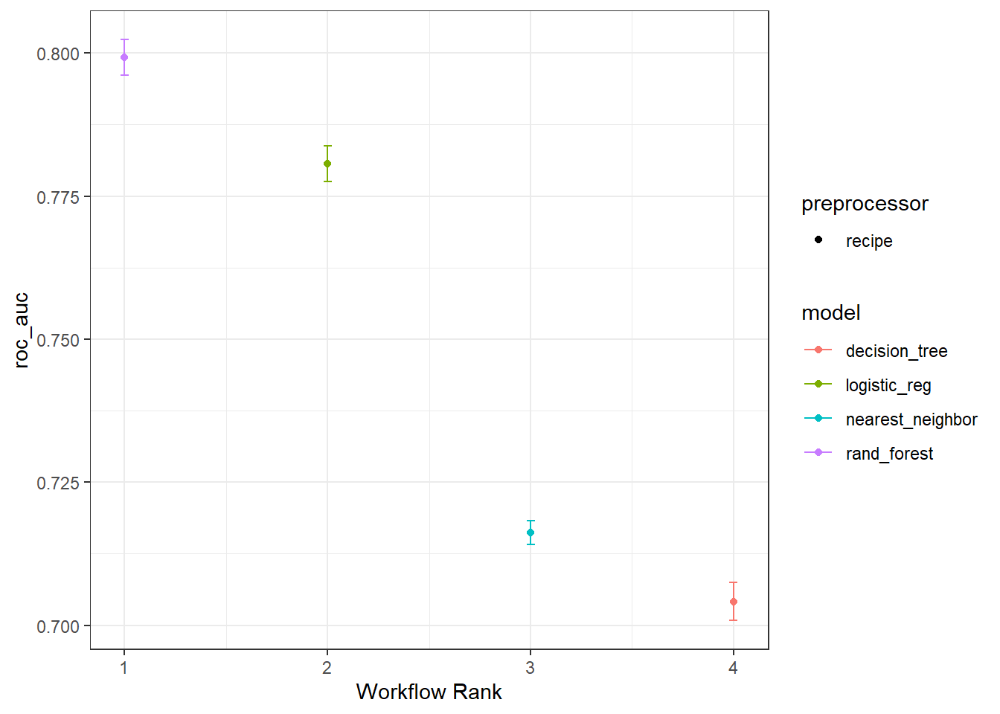

rm(list = ls())
suppressPackageStartupMessages(library(tidyverse))
suppressPackageStartupMessages(library(tidymodels))
library(kknn)
tidymodels_prefer()
all_plays <- read_rds("./datasets/all_plays.rds")
set.seed(20220520)
split_pbp <- initial_split(all_plays, 0.75, strata = play_type)
train_data <- training(split_pbp)
test_data <- testing(split_pbp)47 workflow实现多模型比较
注意
这部分内容主要是几个综合性的机器学习和预测建模R包的介绍，更多的信息，可参考机器学习合集
前面给大家介绍了使用tidymodels搞定二分类资料的模型评价和比较。
简介的语法、统一的格式、优雅的操作，让人欲罢不能！
但是太费事儿了，同样的流程来了4遍，那要是选择10个模型，就得来10遍！无聊，非常的无聊。
所以个大家介绍简便方法，不用重复写代码，一次搞定多个模型！使用tidymodels中的workflow即可。
这个工作流的概念我们也介绍过：tidymodels工作流：workflow
47.1 加载数据和R包
首先还是加载数据和R包，和前面的一模一样的操作，数据也没变。
47.2 数据预处理
pbp_rec <- recipe(play_type ~ ., data = train_data) %>%
step_rm(half_seconds_remaining,yards_gained, game_id) %>%
step_string2factor(posteam, defteam) %>%
step_corr(all_numeric(), threshold = 0.7) %>%
step_center(all_numeric()) %>%
step_zv(all_predictors()) 47.3 选择模型
直接选择4个模型，你想选几个都是可以的。
lm_mod <- logistic_reg(mode = "classification",engine = "glm")
knn_mod <- nearest_neighbor(mode = "classification", engine = "kknn")
rf_mod <- rand_forest(mode = "classification", engine = "ranger")
tree_mod <- decision_tree(mode = "classification",engine = "rpart")47.4 选择重抽样方法
set.seed(20220520)
folds <- vfold_cv(train_data, v = 10)
folds
## # 10-fold cross-validation
## # A tibble: 10 × 2
## splits id
## <list> <chr>
## 1 <split [62082/6899]> Fold01
## 2 <split [62083/6898]> Fold02
## 3 <split [62083/6898]> Fold03
## 4 <split [62083/6898]> Fold04
## 5 <split [62083/6898]> Fold05
## 6 <split [62083/6898]> Fold06
## 7 <split [62083/6898]> Fold07
## 8 <split [62083/6898]> Fold08
## 9 <split [62083/6898]> Fold09
## 10 <split [62083/6898]> Fold1047.5 构建workflow
这一步就是不用重复写代码的关键，把所有模型和数据预处理步骤自动连接起来。
library(workflowsets)
four_mods <- workflow_set(list(rec = pbp_rec),
list(lm = lm_mod,
knn = knn_mod,
rf = rf_mod,
tree = tree_mod
),
cross = T
)
four_mods
## # A workflow set/tibble: 4 × 4
## wflow_id info option result
## <chr> <list> <list> <list>
## 1 rec_lm <tibble [1 × 4]> <opts[0]> <list [0]>
## 2 rec_knn <tibble [1 × 4]> <opts[0]> <list [0]>
## 3 rec_rf <tibble [1 × 4]> <opts[0]> <list [0]>
## 4 rec_tree <tibble [1 × 4]> <opts[0]> <list [0]>47.6 运行模型
首先是一些运行过程中的参数设置：
keep_pred <- control_resamples(save_pred = T, verbose = T)然后就是运行4个模型（目前一直是在训练集中），我们给它加速一下：
library(doParallel)
cl <- makePSOCKcluster(12) # 加速，用12个线程
registerDoParallel(cl)
four_fits <- four_mods %>%
workflow_map("fit_resamples",
seed = 0520,
verbose = T,
resamples = folds,
control = keep_pred
)
i 1 of 4 resampling: rec_lm
✔ 1 of 4 resampling: rec_lm (26.6s)
i 2 of 4 resampling: rec_knn
✔ 2 of 4 resampling: rec_knn (3m 44.1s)
i 3 of 4 resampling: rec_rf
✔ 3 of 4 resampling: rec_rf (1m 10.9s)
i 4 of 4 resampling: rec_tree
✔ 4 of 4 resampling: rec_tree (4.5s)
#saveRDS(four_fits,file="datasets/four_fits.rds")
stopCluster(cl)
four_fits需要很长时间！大家笔记本如果内存不够可能会失败哦~
47.7 查看结果
查看模型在训练集中的表现：
collect_metrics(four_fits)
## # A tibble: 8 × 9
## wflow_id .config preproc model .metric .estimator mean n std_err
## <chr> <chr> <chr> <chr> <chr> <chr> <dbl> <int> <dbl>
## 1 rec_lm Preprocessor1_M… recipe logi… accura… binary 0.724 10 1.91e-3
## 2 rec_lm Preprocessor1_M… recipe logi… roc_auc binary 0.781 10 1.88e-3
## 3 rec_knn Preprocessor1_M… recipe near… accura… binary 0.671 10 7.31e-4
## 4 rec_knn Preprocessor1_M… recipe near… roc_auc binary 0.716 10 1.28e-3
## 5 rec_rf Preprocessor1_M… recipe rand… accura… binary 0.732 10 1.48e-3
## 6 rec_rf Preprocessor1_M… recipe rand… roc_auc binary 0.799 10 1.90e-3
## 7 rec_tree Preprocessor1_M… recipe deci… accura… binary 0.720 10 1.97e-3
## 8 rec_tree Preprocessor1_M… recipe deci… roc_auc binary 0.704 10 2.01e-3查看每一个预测结果，这个就不运行了，毕竟好几万行，太多了。。。
collect_predictions(four_fits)47.8 可视化结果
直接可视化4个模型的结果，感觉比ROC曲线更好看，还给出了可信区间。
这个图可以自己用ggplot2语法修改。
four_fits %>% autoplot(metric = "roc_auc")+theme_bw()
47.9 选择最好的模型用于测试集
选择表现最好的应用于测试集：
rand_res <- last_fit(rf_mod,pbp_rec,split_pbp)
saveRDS(rand_res,file = "./datasets/rand_res.rds")查看在测试集的模型表现：
rand_res <- readRDS(file = "./datasets/rand_res.rds")collect_metrics(rand_res) # test 中的模型表现
## # A tibble: 2 × 4
## .metric .estimator .estimate .config
## <chr> <chr> <dbl> <chr>
## 1 accuracy binary 0.731 Preprocessor1_Model1
## 2 roc_auc binary 0.799 Preprocessor1_Model1使用其他指标查看模型表现：
metricsets <- metric_set(accuracy, mcc, f_meas, j_index)
collect_predictions(rand_res) %>%
metricsets(truth = play_type, estimate = .pred_class)
## # A tibble: 4 × 3
## .metric .estimator .estimate
## <chr> <chr> <dbl>
## 1 accuracy binary 0.731
## 2 mcc binary 0.440
## 3 f_meas binary 0.774
## 4 j_index binary 0.438可视化结果，喜闻乐见的混淆矩阵：
collect_predictions(rand_res) %>%
conf_mat(play_type,.pred_class) %>%
autoplot()
喜闻乐见的ROC曲线：
collect_predictions(rand_res) %>%
roc_curve(play_type,.pred_pass) %>%
autoplot()
还有非常多曲线和评价指标可选，大家可以看我之前的介绍推文~